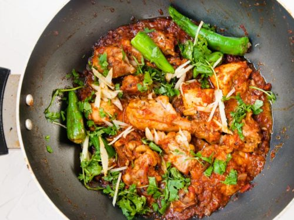

Recipe # 02
Chicken Karahi
A spicy and flavorful Chicken Karahi recipe, originating from the North-Western region of Pakistan. This recipe is a staple in many Pakistani and Indian households, and is often served with naan, rice, or roti.
Ingredients:
- 1 lb boneless, skinless chicken breast or thighs, cut into small pieces
- 2 medium onions, chopped
- 2-3 cloves of garlic, minced
- 1 medium tomato, diced
- 1 teaspoon ginger paste
- 1 teaspoon cumin seeds
- 1 teaspoon coriander powder
- 1 teaspoon garam masala powder
- 1/2 teaspoon turmeric powder
- 1/2 teaspoon red chili powder
- Salt, to taste
- 2 tablespoons vegetable oil
- 2-3 green chilies, chopped (optional)
- Fresh cilantro, for garnish
Instructions:
- Heat oil in a karahi or wok over medium-high heat.
- Add cumin seeds and let them sizzle for a few seconds.
- Add chopped onions and sauté until they are translucent.
- Add minced garlic and sauté for another minute.
- Add chicken pieces and cook until they are browned and cooked through.
- Add diced tomato, ginger paste, coriander powder, garam masala powder, turmeric powder, red chili powder, and salt. Mix well.
- Reduce heat to low and let the mixture simmer for 10-15 minutes, stirring occasionally.
- Garnish with chopped green chilies and fresh cilantro.
- Serve hot with naan, rice, or roti.
